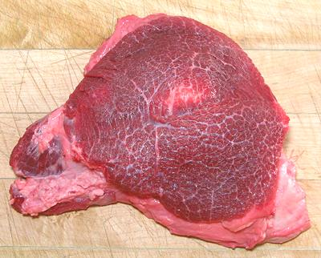
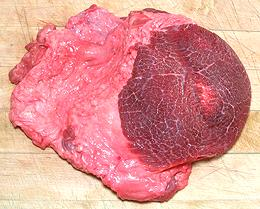

Beef Cheeks

[Joues de Boeuf (French), Guanciale di Manzo (Italian)]
This cut is very highly regarded in Italy and France, and is strongly
favored for Barbacoa in Mexico. It is very tough and shot through with
connective tissue, (cows use these muscles all day to chew their cud)
so it is braised in a flavorful broth for at least 3-1/4 hours until
very tender.
The photo specimen was purchased from a multi-ethnic supermarket in
Los Angeles (San Gabriel). the meaty section, after trimming, was 7
inches long by 5 inches wide and 2-1/4 inches thick, weighing 15-5/8
ounces. As sold, with fat, it was 1 pound 13 ounces. 2013 US $2.99 /
pound.
More on Cuts of Beef.

Prep:
The photo at the left shows the condition of this
cut as sold. It has a lot of fat combined with connective tissue and
some small pieces of meat. None of this went to waste. It was frozen for
inclusion in the next batch of beef stock, for which it was excellent.
Note: much of the flavor in fat is water soluble, so it should not be
discarded, but included in the stock pot. Use your gravy separator to
remove the fat after simmering for 4 to 6 hours.
Yield:
A 1 pound 13 ounce package was 15-5/8 ounces
(54%) after trimming. This is sort of "worst case". My average over a
fair pile of these was 61%. Little fat remains on the photo specimen
above, but I left quite a bit of connective tissue which will dissolve
in the long cooking. This connective tisue is important to Beef Cheek
recipes.
Cooking
This cut is very tough, so recipes call for
long oven brazing, usually about 3 to 3-1/2 hours in a flavorful broth
made with herbs, vegetables, wine and beef stock, which is strained,
de-fatted and reduced to make the sauce.
ab_cheekz 1311107 - www.clovegarden.com
©Andrew Grygus - agryg@clovegarden.com - Photos
on this page not otherwise credited © cg1
- Linking to and non-commercial use of this page permitted